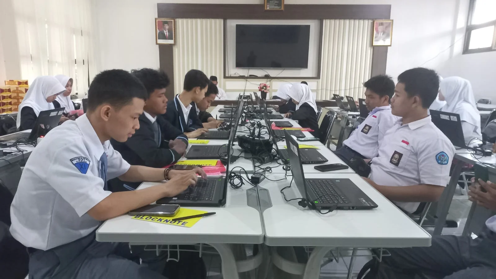

40+
Unit PC
Komputer siap pakai untuk kegiatan belajar secara individual maupun kelompok.
Laboratorium Komputer MAN 1 Cianjur adalah ruang belajar yang nyaman, terhubung, dan siap mendukung pembelajaran digital yang bermakna.
Belajar, berkarya, dan bertumbuh bersama teknologi.

Terhubung untuk pembelajaran tanpa batas

Tentang Laboratorium
Kami menyediakan ekosistem teknologi yang mendukung siswa dan guru untuk mengeksplorasi kompetensi digital secara aman, kreatif, dan bertanggung jawab.
Mendukung mata pelajaran informatika, proyek digital, dan literasi teknologi.
Fasilitas dirawat dan digunakan bersama dengan budaya disiplin serta saling menghargai.
Fasilitas Unggulan
Perangkat dan infrastruktur yang dirancang untuk pembelajaran digital yang efektif, nyaman, dan kolaboratif.
Unit PC
Komputer siap pakai untuk kegiatan belajar secara individual maupun kelompok.
Performa Andal
Spesifikasi memadai untuk aplikasi pembelajaran dan produktivitas digital.
Koneksi Internet
Akses jaringan stabil untuk riset, kelas digital, dan ujian berbasis komputer.
AC & Proyektor
Ruang ber-AC, proyektor, dan server ujian untuk aktivitas yang lancar.
Layanan & Kegiatan
Laboratorium hadir sebagai pendamping setiap langkah pembelajaran digital di MAN 1 Cianjur.

Kegiatan praktik terarah untuk mengasah keterampilan teknologi dan pemecahan masalah.

Dukungan ruang dan server untuk pelaksanaan asesmen berbasis komputer yang tertib.

Workshop dan pembinaan kompetensi digital bagi siswa maupun tenaga pendidik.
Ekstrakurikuler
Wadah bagi siswa MAN 1 Cianjur untuk mengembangkan keterampilan komputer, teknologi, kreativitas, dan kemampuan bekerja sama melalui kegiatan yang menyenangkan dan produktif.

Mempelajari dasar pemrograman, pembuatan website, aplikasi sederhana, dan logika pemrograman.
Mengembangkan kreativitas siswa melalui desain grafis, editing, multimedia, dan pembuatan konten digital.
Mendorong siswa mengikuti berbagai kompetisi di bidang teknologi, komputer, desain, dan informatika.
Membangun kerja sama, komunikasi, kepemimpinan, dan kemampuan bekerja dalam tim melalui berbagai proyek.
Tertarik bergabung dengan SCC?
Kembangkan kemampuan teknologi dan jadilah bagian dari komunitas siswa kreatif MAN 1 Cianjur.
Tata Tertib Lab
Kenyamanan dan keamanan lab adalah tanggung jawab bersama. Mari menjaga ruang belajar ini dengan disiplin.
Masuk dan menggunakan laboratorium sesuai jadwal serta izin dari guru atau pengelola.
Gunakan perangkat dengan hati-hati dan jangan mengubah konfigurasi komputer tanpa izin.
Jaga kebersihan ruang lab; makanan dan minuman tidak diperkenankan di area komputer.
Gunakan internet dan aplikasi pembelajaran secara bijak, positif, dan bertanggung jawab.
Laporkan segera kepada pengelola apabila menemukan kendala atau kerusakan perangkat.